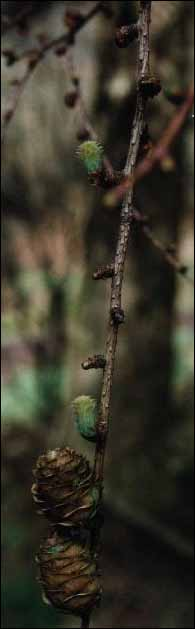
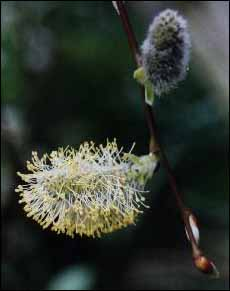
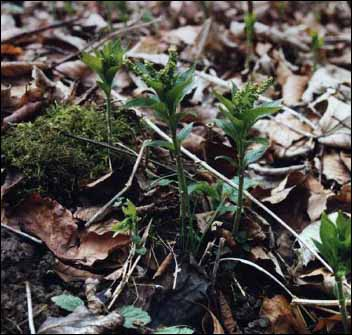
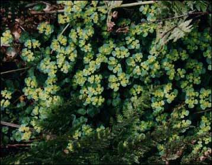
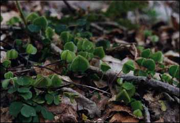
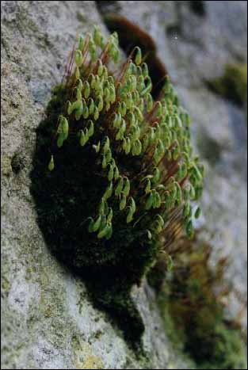
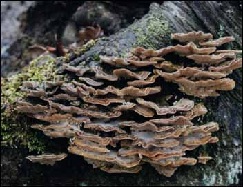
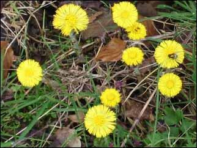
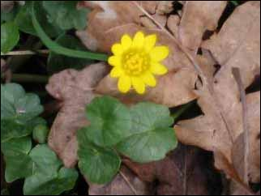
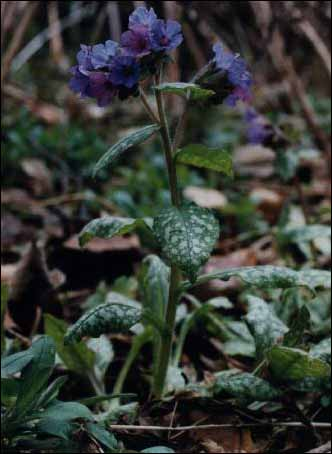

The Countryside in March

It was interesting for us, at the beginning of the month, to travel 250 miles south to London, and to see the difference which exists in the development of important points in the natural calendar. We found that the large (as opposed to the

miniature) daffodils, were all blooming in great yellow swathes; the hawthorn leaves were just starting to open, and the blackthorn (sloe) was blooming. Back home around mid month found our northern area not quite caught up with this about half the daffodils were in flower, the hawthorn was just beginning to show green, and the blackthorn was not in flower, even a week later still!A lot of change takes place in March, but not spectacularly so we tend to plant in our gardens those flowers and trees which give us lots of colour at this time; the yellow daffodils and the forsythia and the pink and the white flowering plums (prunus). Gardens sport many hued primulas and overwintering pansies.
The hawthorn and the narrow leaved willows are the first to start to green up. Buds have swollen on a lot of the deciduous trees, especially the rowan, which is set now to burst into full leaf when the weather is warm. The alder buds are quite pink now, and the larch has just, in the third week of the month, sprouted its new growth as pretty little tassels of the palest green. The elders have quite a crop of new leaves, as have the roses, both in the wild and in the garden.
small new larch needles
(and last year's cones)
The familiar pussy willows are now covered with their fluffy flowers bearing yellow stamens heaped with pollen a pretty foil for the daffodils in vases of cut flowers. The broom is doing well, and there are many bushes in sunny locations bearing lots of flowers, but with many more to come.

Pussy Willow Flower
Look downwards, however, and it is there under the hedges and the leaf litter that many plants are starting to show. The first green to be noticed in the woodland margins is the poisonous dogs mercury and the pale green new leaves of wood sorrel; and in more open ground, the tiny spurges, with bright yellow middles. Some of the mosses are starting to send up their spore stalks, and the first of the fungi are putting in an appearance; it is the time we notice the smaller bracket fungi, the early species in coprinus (inkcaps), and the Jews ear fungus on the elder.

Dog's Mercury

Spurge

Young leaves of Wood Sorrel

Moss with spore stalks

Bracket Fungus
The cheerful yellow coltsfoot abounds in damp areas, with its scaly stem, growing straight from the ground to be followed much later by its leaves. There are masses of yellow celandines, blue speedwell, and blue-purple lungwort. Most of the snowdrops have finished, but a few still lurk in shadier places, with their petals widespread, whilst their former companions are forming their green bulbous seedpods.

Coltsfoot

Celandine

Lungwort
Blackbirds are singing lustily in the fields and gardens, and the dawn chorus is becoming quite full and boisterous! Ponds are full of frogspawn, and the first tiny lambs are appearing in the fields.
All in all, a real antidote to the long wet cold winter time to gather the young nettles and make a cleansing and tonic nettle pudding, and very soon, to gather very young beech leaves to make the alcoholic liqueur beech noyeau. (Recipes in the Wychwood Kitchen.)